The covidBR package provides easy access to official
COVID-19 data sets of Brazil. All functions’ syntax is based on a simple
logic that allows users to download updated data sets for all years.
This vignette provides an overview of covidBR.
Installation
You can install the development version of covidBR from
GitHub with:
# Development version
# install.packages("devtools")
devtools::install_github("arianacabral/covidBR")General usage
The covidBR allows you to obtain the URL on the
Covid-19 Portal available for
downloading the files.
Daily, the Ministry of Health (Ministério da Saúde) updates and publicly disseminates the database, and, consequently, the download URL is updated.
# Get updated URL to download the public file
download_url <- covidBR::cbr_download_url()
# Print URL
download_url
#> [1] "https://mobileapps.saude.gov.br/esus-vepi/files/unAFkcaNDeXajurGB7LChj8SgQYS2ptm/13e12ea09231a57b55f8c04797a5d95e_HIST_PAINEL_COVIDBR_01nov2022.rar"Now let’s download the public file available at the obtained URL.
# Download public file
resp <- covidBR::cbr_download(url_file = download_url,
keep_filename = TRUE)A zip file has been downloaded from the COVID-19 Portal. We use the
cbr_unzip() function to unzip it.
# Get filename
filename <- fs::path_file(resp$url)
# Print filename
filename
#> [1] "13e12ea09231a57b55f8c04797a5d95e_HIST_PAINEL_COVIDBR_01nov2022.rar"
# Unzip
covidBR::cbr_unzip(zip_file = filename,
keep_zip_file = FALSE) # Delete the compressed file
#> ... Unzipping file
#> HIST_PAINEL_COVIDBR_2020_Parte1_01nov2022.csv
#> HIST_PAINEL_COVIDBR_2020_Parte2_01nov2022.csv
#> HIST_PAINEL_COVIDBR_2021_Parte1_01nov2022.csv
#> HIST_PAINEL_COVIDBR_2021_Parte2_01nov2022.csv
#> HIST_PAINEL_COVIDBR_2022_Parte1_01nov2022.csv
#> HIST_PAINEL_COVIDBR_2022_Parte2_01nov2022.csvSimply use the cbr_data() function to combine all files
and generate a single dataset.
# Bind multiple files
covidBR.db <- covidBR::cbr_data()Available variables
You can view what variables are available using the
str() function.
# Display the dataset's structure
str(covidBR.db)
#> Classes 'data.table' and 'data.frame': 5338918 obs. of 17 variables:
#> $ regiao : chr "Brasil" "Brasil" "Brasil" "Brasil" ...
#> $ estado : chr "" "" "" "" ...
#> $ municipio : chr "" "" "" "" ...
#> $ coduf : int 76 76 76 76 76 76 76 76 76 76 ...
#> $ codmun : int NA NA NA NA NA NA NA NA NA NA ...
#> $ cod_regiao_saude : int NA NA NA NA NA NA NA NA NA NA ...
#> $ nome_regiao_saude : chr "" "" "" "" ...
#> $ data : IDate, format: "2020-02-25" "2020-02-26" ...
#> $ semana_epi : int 9 9 9 9 9 10 10 10 10 10 ...
#> $ populacao_tcu2019 : int 210147125 210147125 210147125 210147125 210147125 210147125 210147125 210147125 210147125 210147125 ...
#> $ casos_acumulado : num 0 1 1 1 2 2 2 2 3 7 ...
#> $ casos_novos : int 0 1 0 0 1 0 0 0 1 4 ...
#> $ obitos_acumulado : int 0 0 0 0 0 0 0 0 0 0 ...
#> $ obitos_novos : int 0 0 0 0 0 0 0 0 0 0 ...
#> $ recuperadosnovos : int 0 1 1 0 1 1 0 0 1 4 ...
#> $ em_acompanhamento_novos: int 0 0 0 1 1 1 2 2 2 3 ...
#> $ interior_metropolitana : int NA NA NA NA NA NA NA NA NA NA ...
#> - attr(*, ".internal.selfref")=<externalptr>You can also view the data in a tabular form.
covidBR.db %>%
dplyr::filter(data >= (Sys.Date()-2),
municipio== "") %>%
dplyr::select(!c(municipio, coduf,
codmun, cod_regiao_saude,
nome_regiao_saude,
semana_epi,
populacao_tcu2019,
interior_metropolitana,
em_acompanhamento_novos,
recuperadosnovos)) %>%
knitr:: kable(digits = 4,
caption = "Brasil (últimos 2 dias)")| regiao | estado | data | casos_acumulado | casos_novos | obitos_acumulado | obitos_novos |
|---|---|---|---|---|---|---|
| Brasil | 2022-11-01 | 34837035 | 8286 | 688219 | 62 | |
| Norte | RO | 2022-11-01 | 457668 | 13 | 7361 | 0 |
| Norte | AC | 2022-11-01 | 149871 | 17 | 2029 | 0 |
| Norte | AM | 2022-11-01 | 619286 | 270 | 14358 | 0 |
| Norte | RR | 2022-11-01 | 175526 | 46 | 2175 | 0 |
| Norte | PA | 2022-11-01 | 845141 | 200 | 18886 | 0 |
| Norte | AP | 2022-11-01 | 178427 | 14 | 2164 | 0 |
| Norte | TO | 2022-11-01 | 344864 | 0 | 4206 | 0 |
| Nordeste | MA | 2022-11-01 | 474700 | 4 | 10996 | 0 |
| Nordeste | PI | 2022-11-01 | 404893 | 413 | 7959 | 0 |
| Nordeste | CE | 2022-11-01 | 1386482 | 47 | 28005 | 9 |
| Nordeste | RN | 2022-11-01 | 557553 | 36 | 8483 | 0 |
| Nordeste | PB | 2022-11-01 | 654376 | 6 | 10406 | 0 |
| Nordeste | PE | 2022-11-01 | 1065225 | 296 | 22410 | 4 |
| Nordeste | AL | 2022-11-01 | 321561 | 3 | 7128 | 0 |
| Nordeste | SE | 2022-11-01 | 342914 | 0 | 6441 | 0 |
| Nordeste | BA | 2022-11-01 | 1703991 | 371 | 30792 | 1 |
| Sudeste | MG | 2022-11-01 | 3883495 | 0 | 63879 | 0 |
| Sudeste | ES | 2022-11-01 | 1217371 | 234 | 14834 | 4 |
| Sudeste | RJ | 2022-11-01 | 2537507 | 1918 | 75871 | 13 |
| Sudeste | SP | 2022-11-01 | 6145825 | 2276 | 175574 | 20 |
| Sul | PR | 2022-11-01 | 2753618 | 102 | 45446 | 6 |
| Sul | SC | 2022-11-01 | 1885294 | 491 | 22409 | 0 |
| Sul | RS | 2022-11-01 | 2747139 | 449 | 41195 | 4 |
| Centro-Oeste | MS | 2022-11-01 | 582327 | 21 | 10845 | 2 |
| Centro-Oeste | MT | 2022-11-01 | 832432 | 54 | 14957 | 0 |
| Centro-Oeste | GO | 2022-11-01 | 1726577 | 888 | 27578 | -1 |
| Centro-Oeste | DF | 2022-11-01 | 842972 | 117 | 11832 | 0 |
| Norte | RO | 2022-11-01 | 0 | 0 | 0 | 0 |
| Norte | RR | 2022-11-01 | 3980 | 11 | 23 | 0 |
| Norte | TO | 2022-11-01 | 0 | 0 | 0 | 0 |
| Nordeste | MA | 2022-11-01 | 0 | 0 | 0 | 0 |
| Nordeste | PI | 2022-11-01 | 0 | 0 | 0 | 0 |
| Nordeste | CE | 2022-11-01 | 18155 | 0 | 163 | 163 |
| Nordeste | RN | 2022-11-01 | 0 | 0 | 0 | 0 |
| Nordeste | PB | 2022-11-01 | 0 | 0 | 0 | 0 |
| Nordeste | PE | 2022-11-01 | 0 | 0 | 0 | 0 |
| Nordeste | AL | 2022-11-01 | 0 | 0 | 0 | 0 |
| Nordeste | SE | 2022-11-01 | 0 | 0 | 0 | 0 |
| Nordeste | BA | 2022-11-01 | 20860 | 7 | 356 | 0 |
| Sudeste | MG | 2022-11-01 | 4266 | 0 | 427 | 0 |
| Sudeste | ES | 2022-11-01 | 9281 | 0 | 281 | 0 |
| Sudeste | RJ | 2022-11-01 | 0 | 0 | 0 | 0 |
| Sudeste | SP | 2022-11-01 | 218 | 0 | 0 | 0 |
| Sul | PR | 2022-11-01 | 11787 | -1 | 245 | 0 |
| Sul | SC | 2022-11-01 | 0 | 0 | 0 | 0 |
| Sul | RS | 2022-11-01 | 0 | 0 | 0 | 0 |
| Centro-Oeste | MT | 2022-11-01 | 0 | 0 | 0 | 0 |
| Centro-Oeste | GO | 2022-11-01 | 0 | 0 | 0 | 0 |
Plot data
You can now use ggplot2
to explore the data and create visually appealing plots. See an
example.
covidBR.db %>%
dplyr::filter(regiao == "Brasil",
data >= (Sys.Date()-30)) %>% # get the last 30 days
dplyr::select(data, casos_novos,
obitos_novos) %>%
tidyr::pivot_longer(!data,
names_to = "stat",
values_to = "value") %>%
dplyr::mutate_at("stat",
stringr::str_replace_all,
pattern = "_",
replacement = " ") %>%
ggplot(aes(x = data, y = value)) +
geom_line() +
facet_wrap(~stat, ncol = 1, scales = "free_y") +
labs(title = "Brasil (últimos 30 dias)",
x = "Data da notificação",
y = "") +
theme_minimal()